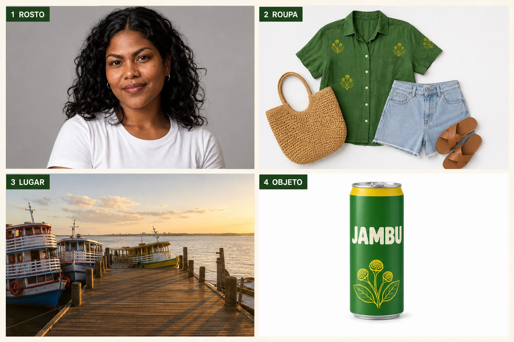
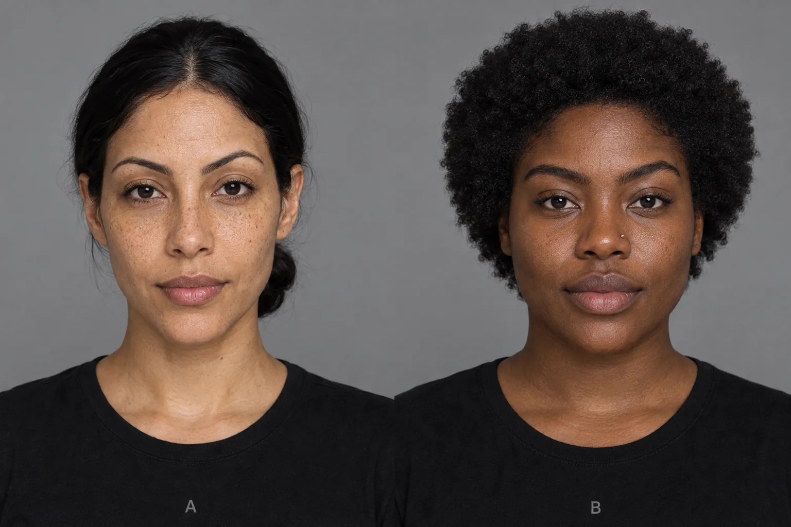
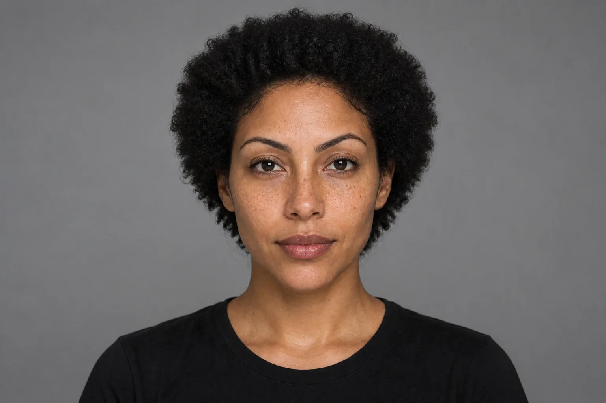
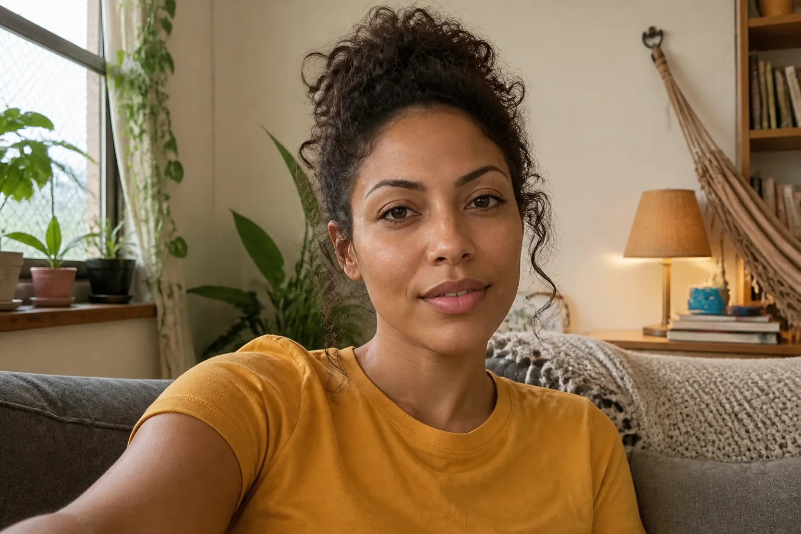
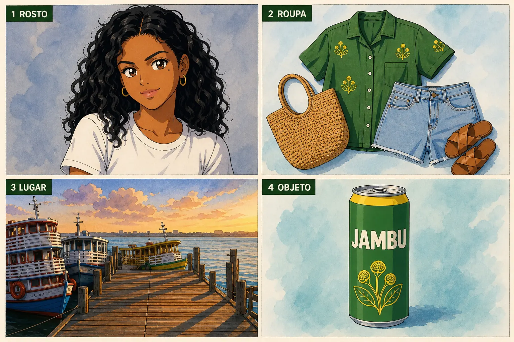
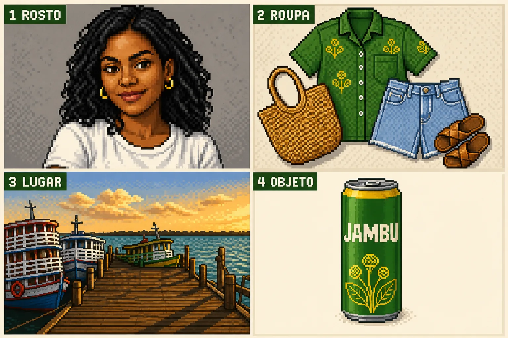
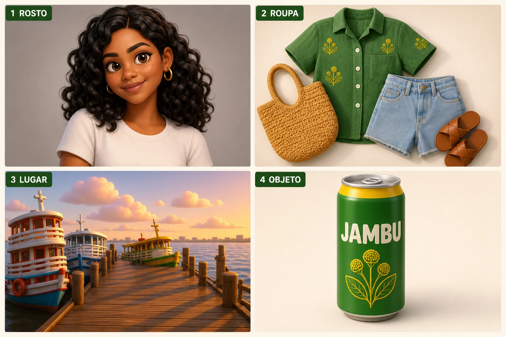
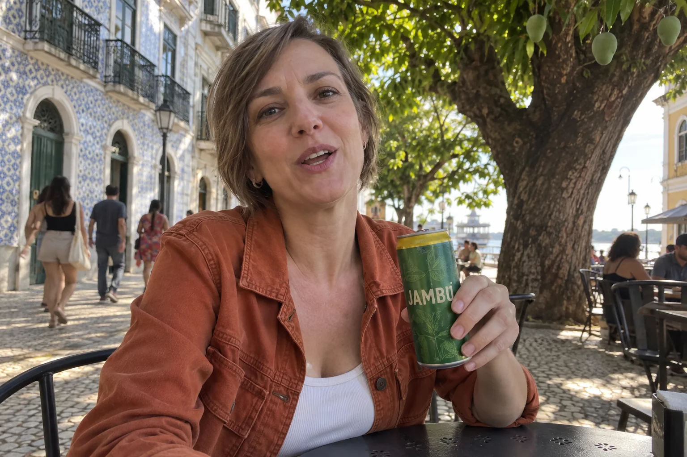
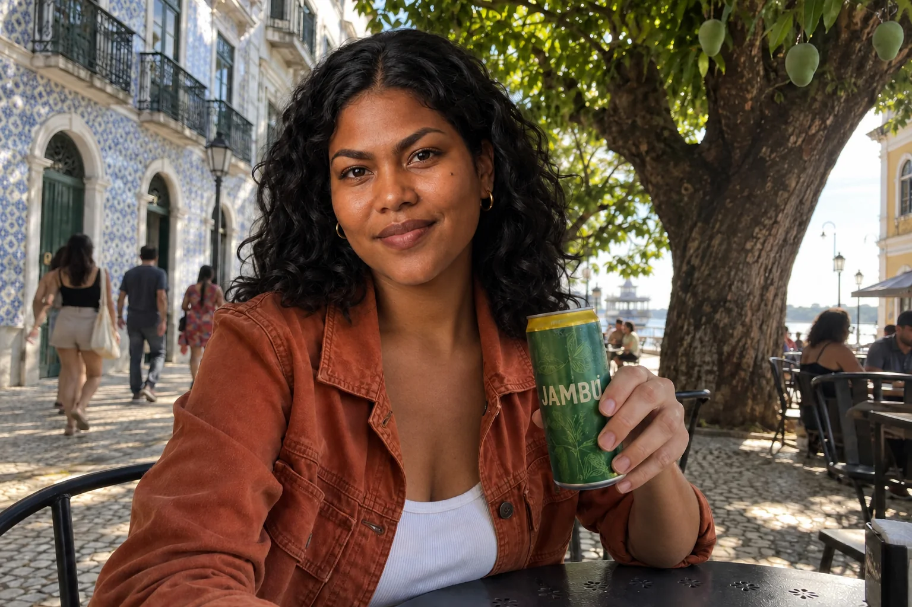
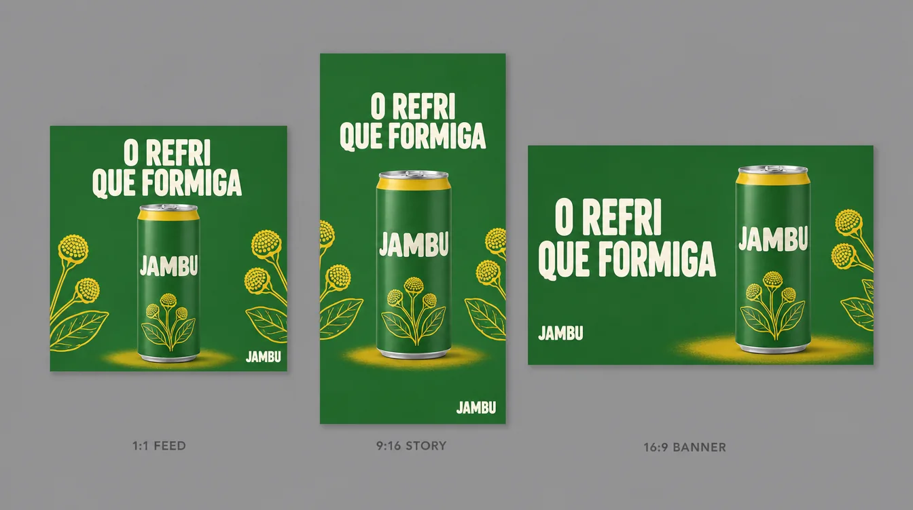

Até aqui você trabalhou quase sempre com uma imagem de referência: a lata ou a Maíra. Uma campanha de verdade mistura várias ao mesmo tempo — o rosto da heroína, a roupa da coleção, o lugar escolhido pela produção, o produto. Quando você joga quatro imagens no modelo sem dizer para que serve cada uma, ele adivinha: pega a roupa do lugar, a cor do produto no rosto, o fundo da foto de rosto. Este módulo é sobre dar papéis.
1Os papéis das referências
O que é
Pense nas referências como a equipe de um set: a atriz empresta o rosto, o figurino empresta a roupa, a locação empresta o lugar, a produção de objetos empresta o produto. No prompt, você chama cada uma pelo número e diz o que tirar dela — e, igualmente importante, o que não tirar.
Papel · frase no prompt · o que ignorar
| Papel | Frase (inglês) | O que a referência NÃO deve passar |
|---|---|---|
| Identidade | use the face from reference image 1 exactly, preserve identity and facial structure | fundo, luz e roupa da foto de rosto |
| Roupa | use the full outfit from reference image 2 exactly, no changes to clothing | o corpo ou o rosto de quem veste, o fundo |
| Lugar | use the location from reference image 3 exactly, same layout, same objects | pessoas que estejam na foto do lugar |
| Objeto | use the object from reference image 4 exactly — the green JAMBU can | escala da foto de estúdio, fundo branco |
| Estilo (opcional) | match the color grade and film look of reference image 5 | os objetos e pessoas da referência de estilo |
Por que aprender
O modelo não sabe que a foto do píer é “só o lugar”: para ele, é mais um monte de informação visual. A frase de papel funciona como etiqueta. Algumas plataformas ajudam com mecanismos próprios — marcar a referência com @ dentro do prompt, ou um campo “personagem” que aproveita só a pessoa e descarta o fundo. Use esses recursos quando existirem (confira na sua ferramenta), mas escreva o papel mesmo assim: é o que funciona em qualquer lugar.
Conceitos-chave em ação
✓ Referência bem escolhida
- rosto: frontal, luz suave, expressão neutra, sem óculos escuros
- roupa: peças inteiras, vistas de frente ou em flat lay
- lugar: vazio, na luz que você quer na cena
- objeto: packshot limpo, rótulo legível
✗ Referência que atrapalha
- rosto de perfil com sombra dura (o modelo inventa o outro lado)
- roupa vestida em outra pessoa (vaza corpo e pose)
- lugar cheio de gente (as pessoas entram na cena)
- produto pequeno no canto de uma foto de ambiente
Quantas referências usar? Comece com o mínimo que resolve: uma para o rosto e uma para o produto já cobrem a maioria das peças de campanha. Cada referência a mais é uma fonte a mais de confusão. Suba para três ou quatro só quando o lugar ou a roupa precisam ser exatos (uma loja real do cliente, uma coleção de roupas que será vendida).
2Exemplo com quatro referências
O que é
Montamos as quatro referências da Maíra numa prancha numerada: 1 ROSTO, 2 ROUPA, 3 LUGAR, 4 OBJETO. Em ferramentas que aceitam várias imagens, você anexaria as quatro separadas; aqui usamos a prancha como entrada única — o que também é uma técnica legítima, a colagem de referências, útil quando a ferramenta tem limite de imagens anexadas.

Instrução de edição usada (sobre a imagem-base)
Turn this image into a REFERENCE BOARD for an AI shoot: a clean 2x2 grid on an off-white (#F6F0E1) background with thin gutters. Each panel has a small dark-green label in its top-left corner with a number and a word. Panel '1 ROSTO': this exact woman, head-and-shoulders close-up, same face, deep brown skin, beauty mark on the left cheekbone, black wavy-curly hair, gold hoops, neutral expression, same studio light. Panel '2 ROUPA': an outfit laid flat on white, seen from above — a leaf-green (#2F7D32) short-sleeve linen button-up shirt with a small yellow jambu-flower print, light-wash denim shorts, a woven straw tote bag and simple tan leather sandals. Panel '3 LUGAR': an empty wooden riverside pier in Belém at golden hour, colorful wooden riverboats moored alongside, wide river behind. Panel '4 OBJETO': a studio packshot on white of a slim matte leaf-green aluminum soda can with a yellow (#F2C200) top band, the cream wordmark 'JAMBU' and a small yellow jambu-flower line drawing. No other text besides the four labels and the wordmark on the can.
A prancha de referências: o rosto da Maíra (1), a roupa em flat lay (2), o píer com barcos (3) e a lata (4). Foi montada editando o retrato da Maíra com a lata-base anexada como segunda imagem, por isso o painel 4 repete o rótulo real. Repare que cada painel é “limpo”: o painel do lugar não tem gente, o da roupa não tem corpo.
Por que aprender
O prompt da cena final segue sempre a mesma ordem: ação e cena primeiro, depois um bloco por referência com a frase de papel, depois os ajustes técnicos. Cada bloco termina com um reforço curto (“no changes to clothing”, “same pier and boats”).
Esqueleto do prompt de 4 referências
<ação e cena em 1 frase> use the face from reference image 1 exactly, preserve identity and facial structure, use the full outfit from reference image 2 exactly, no changes to clothing, use the location from reference image 3 exactly, same layout, use the object from reference image 4 exactly, <onde o objeto está>, <plano, lente, ângulo>, <luz>, <textura/estilo>, NO <o que não pode aparecer: texto, grade, rótulos, outra pessoa>
Conceitos-chave em ação
Instrução de edição usada (sobre a imagem-base)
Turn this image into a REFERENCE BOARD for an AI shoot: a clean 2x2 grid on an off-white (#F6F0E1) background with thin gutters. Each panel has a small dark-green label in its top-left corner with a number and a word. Panel '1 ROSTO': this exact woman, head-and-shoulders close-up, same face, deep brown skin, beauty mark on the left cheekbone, black wavy-curly hair, gold hoops, neutral expression, same studio light. Panel '2 ROUPA': an outfit laid flat on white, seen from above — a leaf-green (#2F7D32) short-sleeve linen button-up shirt with a small yellow jambu-flower print, light-wash denim shorts, a woven straw tote bag and simple tan leather sandals. Panel '3 LUGAR': an empty wooden riverside pier in Belém at golden hour, colorful wooden riverboats moored alongside, wide river behind. Panel '4 OBJETO': a studio packshot on white of a slim matte leaf-green aluminum soda can with a yellow (#F2C200) top band, the cream wordmark 'JAMBU' and a small yellow jambu-flower line drawing. No other text besides the four labels and the wordmark on the can.
Instrução de edição usada (sobre a imagem-base)
The attached image is a reference board with four numbered references. Create ONE single photorealistic photograph (no grid, no labels, no numbers): use the face from reference 1 exactly, preserve identity and facial structure, beauty mark and hair; use the full outfit from reference 2 exactly, no changes to clothing — green jambu-print linen shirt, denim shorts, straw tote beside her, sandals; use the location from reference 3 exactly, same wooden pier and colorful riverboats; use the object from reference 4 exactly, the green JAMBU can, held in her right hand with the wordmark facing the camera. She sits on the edge of the pier, legs dangling over the water, turning toward the camera with a relaxed laugh. Medium-full shot, 35mm lens at f/2.8, eye level, warm golden-hour sunlight from behind-right with a soft rim on her hair, river haze. Natural skin texture, no retouching. No other text in the scene.
A cena é uma edição da prancha. Confira papel por papel: o rosto e a pinta são os da referência 1? A camisa verde estampada e o short vieram da 2? O píer e os barcos são os da 3? A lata tem a faixa amarela e o nome JAMBU da 4? Onde um papel falhou, reforce só aquele bloco.
3DNA fixo e contexto variável
O que é
Um personagem de marca é um ativo: quanto mais reconhecível, mais ele vale. A regra de trabalho é uma conta, um personagem — e o personagem tem um prompt-mestre dividido em duas partes. O DNA fixo (rosto, pele, idade, marcas) você copia e cola sempre, sem editar uma vírgula. O contexto variável (roupa, lugar, luz, pose, ação) é o que muda de peça para peça.
DNA fixo da Maíra (copie sempre igual)
Maíra, 28, from Belém do Pará: deep brown skin with warm undertones, mixed Indigenous and Afro-Brazilian features, high cheekbones, thick dark eyebrows, warm dark-brown eyes, a small beauty mark on her left cheekbone, voluminous shoulder-length black wavy-curly hair with a middle part, small gold hoop earrings.
Por que aprender
Os detalhes pequenos — a pinta na maçã do rosto, as argolas, o repartido no meio — são os que o público usa para reconhecer, e os primeiros que o modelo “esquece”. Escritos no DNA, eles são pedidos em toda geração. Junto com a imagem de referência, texto e imagem se reforçam.
Na prática, isso significa manter um arquivo de texto por personagem, com o DNA fixo no topo e, embaixo, uma lista de contextos já usados (roupas, lugares, luzes). Antes de cada peça, você copia o DNA inteiro e escolhe ou inventa um contexto. Esse arquivo, junto com a imagem de referência aprovada, é o que outra pessoa da equipe precisaria para continuar o personagem sem você.
Conceitos-chave em ação
| Fixo (nunca muda) | Variável (muda por peça) |
|---|---|
| formato do rosto, olhos, sobrancelhas | expressão (riso, surpresa, calma) |
| tom de pele e subtom | luz (dia, chuva, noite, lamparina) |
| marcas: pinta, sardas, cicatriz | roupa e acessórios extras |
| cabelo: textura, comprimento, repartido | penteado do dia (preso, molhado) — com moderação |
| idade aparente | lugar, ação, plano e lente |
4Identidade fictícia a partir de dois rostos
O que é
Quando você quer um rosto que não existe, pode partir de duas (ou mais) referências e pedir ao modelo que as use como inspiração genética: um formato de olho de uma, a maçã do rosto da outra, uma assimetria natural que nenhuma das duas tem. O objetivo é uma terceira pessoa coerente, não uma mistura.

Prompt usado
Reference sheet of two different fictional adult Brazilian women, side by side on a seamless neutral mid-grey background, both head-and-shoulders, facing the camera, neutral relaxed expression, identical soft frontal studio light, 85mm lens at f/5.6, wearing plain black crew-neck t-shirts. Left, labeled 'A' in small grey letters below: early 30s, light-brown olive skin with freckles across the nose, narrow oval face, straight black hair pulled back into a low bun, thin arched eyebrows, dark almond-shaped eyes. Right, labeled 'B' in small grey letters below: late 20s, dark brown skin, broad high cheekbones, full lips, short natural afro hair, strong straight eyebrows, a tiny gold nose stud. Natural skin texture, visible pores, no retouching. No other text.
As duas referências, ambas fictícias e geradas: A e B, mesma luz e mesmo fundo para a comparação ser justa.
Por que aprender
O prompt longo não é enfeite. Ele faz três coisas que o curto não faz: diz quais traços combinar (olhos, sobrancelhas, nariz, lábios, mandíbula), pede imperfeições reais (assimetria leve, poros, linhas de expressão) e dá um contexto de foto comum (sala, celular, 26 mm) — porque um rosto “de estúdio” tende ao perfeito, e perfeito denuncia IA.
Guarde as duas imagens de origem e o prompt exato junto com o resultado: se um dia alguém perguntar de onde veio o rosto do personagem, você mostra que ele nasceu de referências fictícias — e isso também é parte de trabalhar com ética.
Conceitos-chave em ação

Instrução de edição usada (sobre a imagem-base)
Merge these two faces into one person. Single portrait.

Instrução de edição usada (sobre a imagem-base)
Create a photorealistic image of a completely new fictional adult woman generated from the TWO reference individuals A and B, using them only as subtle genetic inspiration rather than direct likeness: blend believable facial structure elements — eye shape, brow geometry, nose bridge and tip, lip proportions, cheekbones, jawline contour — with mild natural asymmetry, a realistic skin undertone, natural pores, fine skin texture and tiny expression lines, into one cohesive person who does not strongly resemble either source. Medium shot from mid-torso up, seated casually on a sofa in a lived-in apartment living room in Belém, plants, a hammock hook on the wall, books, soft textiles. Natural daylight from a nearby window mixed with a warm practical lamp, neutral warm skin tones, gentle ambient shadows. Shot on a modern smartphone main camera, 26mm equivalent, eye level, realistic depth of field, subtle sensor noise, candid creator-style photo. Simple mustard-yellow cotton t-shirt. Avoid morphing artifacts, feature-averaging softness, uncanny symmetry, waxy or plastic skin, heavy beauty retouching, face-swap look, duplicate resemblance to A or B, distorted eyes, mismatched lighting. Single image, no labels, no text.
Duas edições da mesma imagem com A e B, mudando só o prompt. À esquerda, o pedido de uma linha: o modelo decidiu sozinho quanto tirar de cada rosto. À direita, o prompt que lista os traços, pede imperfeições e põe a pessoa numa sala real com luz de janela. Compare cada uma com A e B. A da esquerda não virou uma terceira pessoa: é basicamente o rosto de A (pele clara com sardas, rosto fino, sobrancelha arqueada) com o cabelo afro de B, no mesmo fundo e na mesma camiseta — uma colagem de traços. A da direita já é outra mulher, com traços dos dois lados diluídos, cabelo cacheado preso e a cena de foto de celular que o prompt pediu. Abra “Prompt usado” nas duas.
✓ Peça
- “completely new fictional adult identity”
- “subtle genetic inspiration rather than direct likeness”
- “mild facial asymmetry, natural pores, tiny expression lines”
- contexto cotidiano + câmera de celular
✗ Proíba (no fim do prompt)
- “morphing artifacts, feature-averaging softness”
- “uncanny symmetry, waxy or plastic skin”
- “face-swap look, duplicate resemblance”
- “distorted eyes, mismatched lighting”
5Reestilizar uma colagem: anime, pixel art, 3D
O que é
Geradores de vídeo que aceitam várias imagens (muitos aceitam até 9) funcionam melhor quando você entrega uma colagem limpa: personagem, lugar, objetos, cada um num espaço. O truque é que você não precisa refazer tudo para mudar o estilo: pega a mesma colagem, pede ao modelo de imagem para reestilizá-la inteira, e usa a colagem nova no vídeo, com uma nota curta de estilo no começo do prompt (“Anime style.”, “16-bit pixel art.”).
Instrução de edição usada (sobre a imagem-base)
Turn this image into a REFERENCE BOARD for an AI shoot: a clean 2x2 grid on an off-white (#F6F0E1) background with thin gutters. Each panel has a small dark-green label in its top-left corner with a number and a word. Panel '1 ROSTO': this exact woman, head-and-shoulders close-up, same face, deep brown skin, beauty mark on the left cheekbone, black wavy-curly hair, gold hoops, neutral expression, same studio light. Panel '2 ROUPA': an outfit laid flat on white, seen from above — a leaf-green (#2F7D32) short-sleeve linen button-up shirt with a small yellow jambu-flower print, light-wash denim shorts, a woven straw tote bag and simple tan leather sandals. Panel '3 LUGAR': an empty wooden riverside pier in Belém at golden hour, colorful wooden riverboats moored alongside, wide river behind. Panel '4 OBJETO': a studio packshot on white of a slim matte leaf-green aluminum soda can with a yellow (#F2C200) top band, the cream wordmark 'JAMBU' and a small yellow jambu-flower line drawing. No other text besides the four labels and the wordmark on the can.

Instrução de edição usada (sobre a imagem-base)
Fully re-render this ENTIRE reference board as hand-drawn 1990s Japanese cel-shaded anime: flat cel colors, clean black ink outlines, two-tone shading, painted watercolor-style backgrounds, large expressive anime eyes for the woman while keeping her deep brown skin, beauty mark, black wavy-curly hair and gold hoops. Keep exactly the same 2x2 layout, the same four subjects (face, outfit, pier with boats, green JAMBU can), the same colors and the same labels '1 ROSTO', '2 ROUPA', '3 LUGAR', '4 OBJETO'. Nothing photographic may remain.

Instrução de edição usada (sobre a imagem-base)
Fully re-render this ENTIRE reference board as 16-bit retro video game pixel art: large clearly visible square pixels, a limited palette of about 32 colors, no anti-aliasing, dithered shading, sprite-like woman portrait keeping her deep brown skin, black curly hair and gold hoops, pixel-art outfit, pixel-art pier with boats and water tiles, pixel-art green can with a yellow band and the word JAMBU in blocky pixel letters. Keep exactly the same 2x2 layout, the same four subjects and the labels '1 ROSTO', '2 ROUPA', '3 LUGAR', '4 OBJETO' in pixel font. Nothing photographic may remain.

Instrução de edição usada (sobre a imagem-base)
Fully re-render this ENTIRE reference board as a stylized 3D animated feature film look: soft rounded CG shapes, subsurface-scattered skin, slightly exaggerated friendly proportions with big eyes for the woman while keeping her deep brown skin, beauty mark, black wavy-curly hair and gold hoops, soft global illumination, plush fabric shading on the outfit, a toy-like 3D pier and riverboats, a glossy 3D green can with a yellow band and the JAMBU wordmark. Keep exactly the same 2x2 layout, the same four subjects and the labels '1 ROSTO', '2 ROUPA', '3 LUGAR', '4 OBJETO'. Nothing photographic may remain.
Três edições da mesma prancha, cada uma com um estilo. Confira o que tinha de se manter: a grade 2×2, os números e palavras dos painéis, a pinta e as argolas da Maíra, a faixa amarela da lata. Nas três, a grade, os quatro rótulos, as argolas, a roupa, o píer e a lata com JAMBU sobreviveram; a pinta só aparece com clareza no anime (no 3D ela some entre as bochechas, na pixel art não há resolução para ela). O anime virou traço e cor chapada com fundo em aquarela; o 3D, personagem de olhos grandes e barcos de brinquedo; a pixel art mostra os pixels e o pontilhado, mas em resolução alta demais para um sprite de 16 bits de verdade — parece mais ilustração pixelada. Onde o estilo mudou pouco ou o conteúdo se perdeu, reforce a instrução daquele estilo (ex.: “very low resolution, about 64×64 pixels per panel”).
Por que aprender
Instruções fracas de estilo (“make it anime”) costumam devolver algo parecido com a original, só com filtro. Para a conversão ser completa, diga “Fully re-render this ENTIRE image”, descreva as marcas do estilo (contorno de tinta e cor chapada no anime; pixels quadrados visíveis e paleta limitada no pixel art; pele com luz atravessando e formas arredondadas no 3D) e termine com “Nothing photographic may remain.”
No gerador de vídeo, a colagem reestilizada vai como referência e o prompt começa com uma nota curta de estilo (“Anime style, cel-shaded.”) seguida do mesmo roteiro de sempre. A história e os planos não mudam; só a pele visual. É assim que uma única ideia de comercial vira quatro versões para testar com públicos diferentes.
Conceitos-chave em ação
Marcas de estilo para escrever no prompt
| Estilo | Descreva | Cuidado |
|---|---|---|
| Anime / cel | clean black ink outlines, flat cel colors, two-tone shading, painted backgrounds | olhos grandes podem apagar traços do rosto: repita o DNA |
| Pixel art | visible square pixels, limited 32-color palette, no anti-aliasing, dithering | texto vira bloco: mantenha só palavras curtas |
| 3D estilizado | soft rounded CG shapes, subsurface skin, global illumination | não cite estúdios pelo nome; descreva a estética |
| Low-poly anos 90 (console) | low polygon count, blurry low-res textures, vertex jitter | detalhes pequenos viram bagunça: simplifique a colagem antes |
6Trocar o personagem numa cena existente
O que é
Há dois caminhos para uma cena com o seu personagem: geração completa (tudo inventado — ótimo para lugares impossíveis) e realidade híbrida (você grava ou fotografa o ambiente de verdade e troca só o rosto). No segundo, você tira um quadro do seu vídeo, anexa junto com a referência do personagem e pede: substitua apenas o rosto.

Prompt usado
Candid smartphone photo, as if a frame grabbed from a phone video: a fictional woman in her early 40s with light skin, a narrow face and short straight ash-brown hair, wearing a rust-orange denim jacket over a white tank top, sitting at a small metal table of a sidewalk café in Belém under a big mango tree, holding a slim leaf-green aluminum soda can with a yellow top band and the cream word JAMBU, looking at the camera mid-sentence with a friendly expression. Colonial tiled facades and passing people softly blurred behind. Dappled afternoon sunlight through the leaves, slightly uneven exposure, 26mm smartphone lens, eye level, natural imperfect framing. No other text.

Instrução de edição usada (sobre a imagem-base)
Replace ONLY the woman's face and hair with this character — Maíra, 28, from Belém: deep brown skin with warm undertones, mixed Indigenous and Afro-Brazilian features, high cheekbones, thick dark eyebrows, warm dark-brown eyes, a small beauty mark on her left cheekbone, voluminous shoulder-length black wavy-curly hair with a middle part, small gold hoop earrings. Match the skin tone of her neck and hands to the new face. Keep EVERYTHING else identical: the rust-orange denim jacket and white tank top, her pose, the hand holding the JAMBU can, the café table, the mango tree, the street, the dappled light, the framing and the smartphone look.
Uma edição da mesma foto — e aqui a “cena original” também foi gerada, no papel do quadro que você tiraria do seu vídeo. A jaqueta, a pose, a mão com a lata, a mesa e a mangueira deveriam continuar idênticas; só o rosto e o cabelo mudam. Além do DNA fixo escrito no prompt, o retrato-base da Maíra foi anexado como segunda imagem — e o rosto saiu reconhecível, com a pinta, as argolas e o cabelo. Confira o que escapou: a jaqueta ferrugem, a regata, a mangueira e os azulejos ficaram, mas o braço com a lata mudou de posição (agora ela estende a lata para a câmera) e o enquadramento aproximou. Troca de rosto por edição nunca é 100% cirúrgica; se o gesto importa, reforce “keep the exact same arm and hand position”.
Por que aprender
Roupa, luz e lugar reais carregam milhares de detalhes que um gerador erra (dobras, sujeira, reflexos). Trocando só o rosto, você herda tudo isso de graça. O ponto crítico é a costura: tom de pele do rosto igual ao do pescoço e das mãos, e a luz do rosto vindo do mesmo lado da luz da cena.
Conceitos-chave em ação
Realidade híbrida, do vídeo ao quadro pronto
- Grave a cena com o celular parado (tripé, prateleira, apoiado na mesa). Se ela for animada depois, câmera tremida faz o rosto “flutuar”.
- Tire um quadro nítido (sem borrão de movimento, rosto de frente ou 3/4).
- Anexe o quadro + a referência do personagem e diga o papel de cada um.
- Prompt: “Replace ONLY the face and hair with the character from reference 2. Match the skin tone of the neck and hands. Keep everything else identical.”
- Confira a costura: pescoço, linha do cabelo, direção da luz no rosto.
7Uma peça, vários formatos
O que é
Toda campanha acaba em muitos tamanhos. O jeito amador é cortar a imagem principal; o jeito profissional é re-diagramar: o mesmo título, o mesmo produto e as mesmas cores, reposicionados para cada formato. Com um modelo que escreve texto bem, você pede a adaptação em linguagem comum — e, se precisar de outro país, pede os mesmos textos em outro idioma.
| Formato | Onde | Como organizar |
|---|---|---|
| 1:1 | feed, marketplace | produto central, título acima ou abaixo |
| 4:5 | feed (ocupa mais tela) | igual ao 1:1 com mais respiro vertical |
| 9:16 | stories, Reels, vídeo vertical | nada importante nos 14% de cima e de baixo (interface do app) |
| 16:9 | banner de site, YouTube, TV | título numa metade, produto na outra |
| 3:2 | site, apresentação | como 16:9, com um pouco mais de altura |
Por que aprender
A adaptação é onde mais aparece a diferença entre “imagem bonita” e “sistema de campanha”: o cliente não quer uma foto, quer a mesma ideia funcionando em todo lugar que ela vai aparecer.
Na localização, o mesmo cuidado vale em dobro: peça os textos traduzidos escritos por você, entre aspas, e nunca “traduza para o inglês” de forma aberta — o modelo pode escolher palavras diferentes das que o cliente aprovou. Confira acentos e caracteres especiais (ç, ñ, ã), que são os primeiros a escapar.
Conceitos-chave em ação

Instrução de edição usada (sobre a imagem-base)
Create an AD ADAPTATION SHEET on a neutral mid-grey board: the same Jambu ad shown in three formats side by side at the same height, each one re-laid-out for its format, not just cropped. Each contains this exact can, the headline 'O REFRI QUE FORMIGA' in a heavy condensed rounded uppercase sans-serif in cream (#F6F0E1), a small 'JAMBU' wordmark, a leaf-green (#2F7D32) background with jambu-yellow (#F2C200) accents and a few yellow jambu flower buds. Left: a square 1:1 feed post, can centered, headline above. Middle: a tall 9:16 story, headline at the top, can in the middle, empty safe zones at the very top and bottom. Right: a wide 16:9 web banner, headline on the left half, can on the right. Small grey labels under each: '1:1 FEED', '9:16 STORY', '16:9 BANNER'. Keep the can design identical in all three. Every text spelled exactly as written, no other text.
Uma edição da lata-base pedindo a mesma peça em três formatos lado a lado (a folha foi pedida em 16:9 para caber os três com folga). Confira: o título está escrito certo nos três? No story, o título fugiu das bordas? No banner, título e lata ficaram em metades diferentes? Aqui as três respostas são sim: “O REFRI QUE FORMIGA” sem erro, o story com faixa vazia em cima e embaixo, o banner com título à esquerda e lata à direita. Use a folha como rascunho para aprovação; cada formato final se gera separado, no tamanho real.
Localizar uma peça para outro idioma
Objetivo: Trocar só os textos de uma peça pronta, mantendo layout e imagem.
Translate ONLY the texts in this ad into <idioma>: '<texto 1>' becomes '<tradução 1>', '<texto 2>' becomes '<tradução 2>'. Keep the same font style, size, color, position and everything else in the image identical.
Como verificar: Todos os textos foram trocados, com a grafia exata? A tipografia e a posição são as mesmas? Nada mais na imagem mudou?
Prática guiada: uma cena com quatro papéis e três adaptações
Use a sua heroína e o seu produto (ou a Maíra e a lata Jambu). O objetivo é sair com uma cena feita de quatro referências, a mesma colagem em um estilo novo e a peça em três formatos.
Roteiro
- Separe 4 referências limpas: rosto, roupa (flat lay), lugar vazio, produto em packshot.
- Gere a cena com o prompt de 4 papéis abaixo e confira papel por papel.
- Monte uma colagem com as 4 referências (ou use a prancha) e reestilize para um estilo à sua escolha.
- Pegue a melhor imagem com texto da campanha e gere a folha de adaptação 1:1 · 9:16 · 16:9.
Cena com 4 referências (papéis explícitos)
Objetivo: Combinar rosto, roupa, lugar e objeto numa foto só, sem que os atributos se misturem.
<Ação e cena: quem faz o quê, onde>. Use the face from reference image 1 exactly, preserve identity and facial structure, <marca distintiva>. Use the full outfit from reference image 2 exactly, no changes to clothing. Use the location from reference image 3 exactly, same layout and objects. Use the object from reference image 4 exactly, <onde o objeto está / como é segurado>, label facing the camera. <Plano>, <lente e abertura>, <ângulo>, <luz: fonte, direção, hora>. Natural skin texture, no retouching. NO text, NO labels, NO grid, NO extra people.
Como verificar: Faça a checagem papel por papel. Se a roupa veio errada, reforce só a linha 3 (ex.: “the green shirt has a small yellow flower print”) e gere de novo.
Identidade fictícia a partir de 2 referências (anti-morphing)
Objetivo: Criar um rosto novo e crível, que não se pareça com nenhuma das fontes.
Create a photorealistic image of a completely new fictional adult <gênero> generated from the TWO reference individuals, using them only as subtle genetic inspiration rather than direct likeness: blend believable facial structure elements — eye shape, brow geometry, nose bridge and tip, lip proportions, cheekbones, jawline — with mild natural asymmetry, realistic skin undertone, natural pores and tiny expression lines, into one cohesive person who does not strongly resemble either source. Medium shot from mid-torso up, <lugar cotidiano com 3 objetos>, natural window light mixed with a warm practical lamp. Shot on a modern smartphone main camera, 26mm equivalent, eye level, subtle sensor noise, candid photo. <Roupa simples>. Avoid morphing artifacts, feature-averaging softness, uncanny symmetry, waxy or plastic skin, heavy retouching, face-swap look, duplicate resemblance, distorted eyes, mismatched lighting.
Como verificar: Coloque o resultado ao lado das duas fontes: ele lembra claramente uma delas? Se sim, gere de novo. A pele tem poros e o rosto tem alguma assimetria?
Reestilizar a colagem inteira
Objetivo: Converter a colagem de referências para outro estilo, mantendo layout e conteúdo.
Fully re-render this ENTIRE image as <estilo>: <3-4 marcas visuais do estilo>. Keep exactly the same layout, the same subjects in the same positions, the same colors and the same labels. Keep the character's <traços do DNA fixo>. Nothing photographic may remain.
Como verificar: O estilo mudou por completo (sem “foto com filtro”)? Layout, rótulos e traços do personagem se mantiveram?
Lição de casa
Você vai montar o “kit de referências” da sua campanha — o material que qualquer pessoa da equipe usaria para gerar peças coerentes.
Nível básico (obrigatório)
- Escreva o DNA fixo da sua heroína (5–8 traços) e salve num arquivo.
- Monte a prancha de 4 referências numeradas (rosto, roupa, lugar, objeto).
- Gere 2 cenas diferentes com os mesmos 4 blocos de papel, mudando só a ação.
- Reestilize a prancha para 1 estilo e anote o que se perdeu na conversão.
- Gere a folha de adaptação 1:1 · 9:16 · 16:9 de uma peça com texto.
Nível avançado (desafio)
- Personagem original: crie 2 rostos fictícios de referência, gere a identidade nova com o prompt anti-morphing e, depois, 3 cenas com ela (DNA fixo + contexto variável). Escreva uma ficha de personagem de 1 página.
- Realidade híbrida: grave 5 segundos de vídeo com o celular parado, tire um quadro e troque o rosto pelo do seu personagem fictício. Descreva em 5 frases o que denunciou a edição e como corrigiu.
- Localização: adapte uma peça com texto para inglês e espanhol, conferindo a grafia de cada palavra.
Entregue/guarde: Kit de referências: DNA fixo, prancha numerada, 2 cenas, a versão reestilizada e a folha de formatos, com os prompts exatos.
Teste sua decisão
1. Nesta cena cada referência cumpriu seu papel. Mas imagine que a Maíra tivesse aparecido com a roupa certa e o fundo cinza da foto de rosto. O que faltou?
Consultar a explicação
Sem papel declarado, o modelo não sabe que a foto de rosto é só identidade e leva junto o fundo dela. “Use the face from reference 1… use the location from reference 3 exactly” resolve.
2. Qual destes trechos pertence ao DNA fixo de um personagem?
Consultar a explicação
Marcas do rosto são o que o público usa para reconhecer o personagem e não mudam nunca. Roupa e ação são contexto variável.
3. Você pediu “make this collage anime” e recebeu quase a mesma imagem, com cores um pouco mais saturadas. Qual é o ajuste?
Consultar a explicação
Instruções de estilo fracas viram filtro. Descrever o estilo com força (contorno, cor chapada, sombra em dois tons) e proibir o fotográfico faz a conversão ser completa.
Responder não marca a leitura nem bloqueia o próximo módulo.
O que levar desta aula
- Cada referência tem um papel — identidade, roupa, lugar, objeto — e o papel vai escrito no prompt.
- Referência boa é limpa: lugar sem gente, roupa sem corpo, produto em packshot.
- DNA fixo se copia sem mudar uma vírgula; roupa, luz, lugar e ação são contexto variável.
- Identidade nova a partir de dois rostos pede o prompt anti-morphing — e só com rostos fictícios ou autorizados.
- A mesma colagem, reestilizada com instrução forte, vira a base de um vídeo em qualquer estilo.
- Adaptar é re-diagramar para cada formato, não cortar.